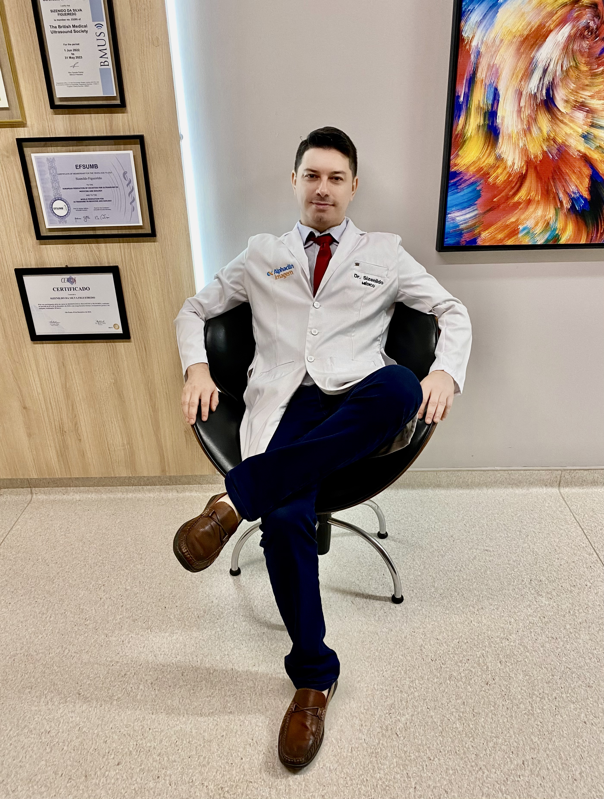

Produção Científica

Artigos Médicos
- FIGUEIREDO, S. S.; RIBEIRO LHV; NOBREGA, B. B.; COSTA, M. A. B.; OLIVEIRA, G. L.; ESTEVES E; MONTEIRO, S. S.; LEDERMAN, H. M.. Atresia of the gastrointestinal tract: evaluation by imaging methods. Radiologia Brasileira, v. 38, p. 141-150, 2005.
- CUNHA, F. M.; FIGUEIREDO, S. S.; NOBREGA, B. B.; OLIVEIRA, G. L.; MONTEIRO.S.S; LEDERMAN, H. M.. Intussusception in children: evaluation by imaging methods and therapeutic approach. Radiologia Brasileira, v. 38, p. 209-218, 2005.
- FIGUEIREDO, S. S.; ARAUJO JUNIOR, C. R.; TEIXEIRA KISS. Hyperthrophic stenosis of piloro: a clinical and radiological approach. SIICSalud (Buenos Aires), v. 47, p. 06315022, 2005.
- ARAUJO JUNIOR, C. R.; TN OAK; FRAGUAS FILHO, S. R.; COSTA, M. A. B.; BORBA, A. O. C.; FIGUEIREDO, S. S.; MACHADO, M. M.; TEIXEIRA KISS. Childhood melanocytic neuroectodermal tumor (progonome): case report emphasizing tomographic aspects and literature review. Radiologia Brasileira, v. 37, p. 457-460, 2004.
- FIGUEIREDO, S. S.; ARAUJO JUNIOR, C. R.; NOBREGA, B. B.; JACOB BM; ESTEVES E; TEIXEIRA KISS. Hypertrophic stenosis of the pylorus: clinical, radiological and ultrasound characterization. Radiologia Brasileira, vol. 36, n.2, p. 111-116, 2003
- MONTANDON C; NOBREGA, B. B.; FIGUEIREDO, S. S.; MONTANDON MEJ; TEIXEIRA KISS. Osteonecrosis of the knee and related injuries: evaluation by magnetic resonance. Revista da imagem, v. 24, n.3, p. 163-170, 2003.
- JACOB BM; TEIXEIRA KISS; FIGUEIREDO, S. S.; NOBREGA, B. B. Hyperplastic persistence of the primitive vitreous: evaluation by imaging methods. Radiologia Brasileira, v. 36, p. 173-178, 2003.
- FIGUEIREDO, S. S.; ARGOLLO, R. S.; COSTA, M. A. B.; RIBEIRO FAS; NOBREGA, B. B.; PINTO, S. A.; LOBO, L. V. B.; REBOLCAS, M. A. M.; Teixeira KISS. Sarcomatoid renal carcinoma: imaging and anatomopathological findings. About a case. Radiologia Brasileira, v. 36, p. 243-249, 2003.
- NOBREGA, B. B.; FIGUEIREDO, S. S.; CAVALCANTE, L. P.; RIBEIRO RE; TEIXEIRA, K. I. S. S.. Tracheobronchiomegaly (Mounier-Kuhn syndrome) - case report and literature review. Radiologia Brasileira, v. 35, n.3, p. 187-189, 2002.
- FIGUEIREDO, S. S.; RIBEIRO LHV; NOBREGA, B. B.; TEIXEIRA, K. I. S. S.; MSB LEITE; OLIVEIRA AA. Pulmonary alveolar microlithiasis in twin twins - report of two cases. Radiologia Brasileira, v. 35, n.4, p. 239-242, 2002.
- NOBREGA, B. B.; FIGUEIREDO, S. S.; CAVALCANTE, L. P.; RIBEIRO RE; TEIXEIRA, K. I. S. S.; PAULA, C. I.. Esophageal fibrovascular polyp - case report and literature review. Radiologia Brasileira, v. 35, n.4, p. 243-245, 2002.
- FIGUEIREDO, S. S.; RIBEIRO LHV; NOBREGA, B. B.; TEIXEIRA, K. I. S. S. Craniometaphyseal dysplasia - a case report. Radiologia Brasileira, v. 35, n.4, p. 247-250, 2002.
- FIGUEIREDO, S. S.; CARVALHO TN O; NOBREGA, B. B.; RIBEIRO FAS; TEIXEIRA, K. I. S. S.; XIMENES CA. Radiographic characterization of esophagogastrointestinal manifestations of Chagas disease. Radiologia Brasileira, v. 35, n.5, p. 293-297, 2002.
- FIGUEIREDO, S. S.; NOBREGA, B. B.; RIBEIRO FAS; LOBO, L. V. B.; TEIXEIRA, K. I. S. S.. Cystic rectal duplication - case report and literature review. Revista da Imagem. v. 24, p.185-188, 2002.
- FIGUEIREDO, S. S.; ESTEVES E; MODESTO, B. B. C.; NOBREGA, B. B.; RIBEIRO FAS; TEIXEIRA KISS. Weismann-Netter-Stuhl syndrome (Toxopachyostèose diaphysaire tibio-peronière) - radiological diagnosis in two new cases. Revista da imagem, v. 24, p. 211-214, 2002.
- MONTANDON C; FIGUEIREDO, S. S.; NOBREGA, B. B.; MONTANDOM MEJ; Teixeira KISS. Meniscal injuries in children and adolescents: evaluation by magnetic resonance. Revista da imagem, v. 24, p. 171-176, 2002.
- VITAL, R. J.; MATTOS, L. A.; SOUZA, L. R. M. F.; FIGUEIREDO, S. S.; SZEJNFELD, J.. Ultrasonographic aspects of non-neoplastic changes in the testis. Radiologia Brasileira, v.40, n1, p. 61-67, 2007
- FIGUEIREDO, S. S.; ARAUJO, J. S.; KOZAN, J. E. M.; SANTOS, N. C. L.; TANGANELI, V.. Chondrodysplasia punctata rhizomelic form - case report and brief review of the literature. Radiologia Brasileira, v.40, n1, p 69-72. 2007.
- FIGUEIREDO, S. S.; TEIXEIRA KISS. OLHO E ÓRBITA. In: SOUZA, LRMF, DE NICOLA, H, SZEJNFELD J. Ultrassonografia de órgãos e estruturas superficiais. 1 ed. São Paulo, Roca, 2007, p71-107.
- II CURSO DE RM DO JOELHO DA RADIOLOGIA ORTOPÉDICA – 03/2019 A 12/2021.
- I CURSO DE RM DO OMBRO DA RADIOLOGIA ORTOPÉDICA – 03/2019 A 12/2021.
- I JORNADA INTERNACIONAL DE RESSONÂNCIA MAGNÉTICA EM MÚSCULOESQUELÉTICO - 15 A 17/11/2007.
- CURSO CETRUS DE PRÁTICA INTENSIVA EM BIÓPSIA DE TIREOIDE – 14/10/2019.
- CURSO CETRUS DE ULTRASSONOGRAFIA DA TIREOIDE COM DOPPLER E BIÓPSIA, ULTRASSONOGRAFIA CERVICAL E DE GLÂNDULAS SALIVARES - 11 A 13/10/2019.
- CURSO CETRUS DE RESSONÂNCIA MAGNÉTICA MAMÁRIA – 03 A 05/12/2010.
- CURSO CETRUS DE DOPPLER VASCULAR – ARTEIAL CARÓTIDAS E VÉRTEBRAIS, ARTERIAL E VENOSO PERIFÉRICO – 05 A 12/07/2003.